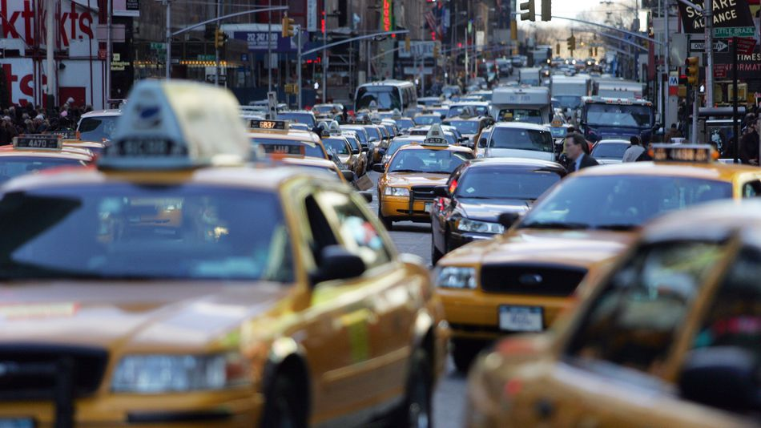
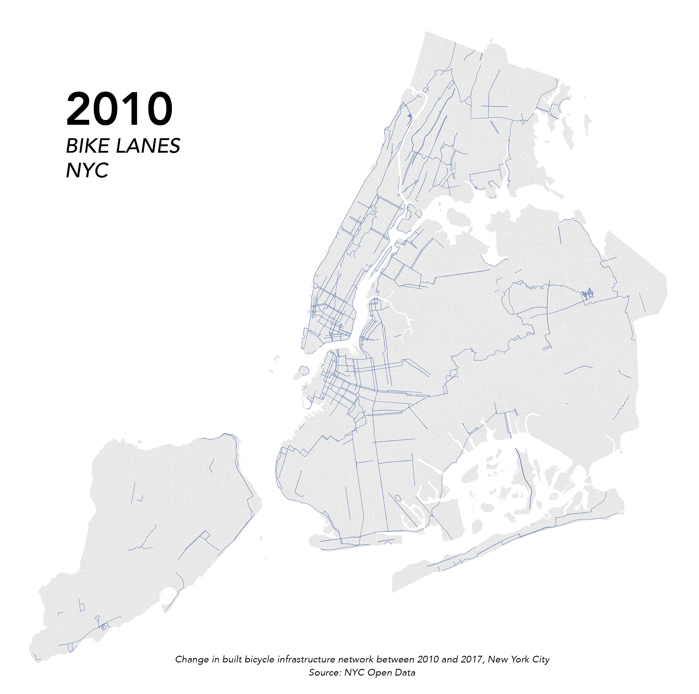

By Helen Pierson
New York City’s efforts to expand its networks of bicycle lanes have been widely publicized and praised. As of 2019, the city has over 1,000 miles of bike lanes throughout the five boroughs, and has released plans to build at least 250 miles more. But is changing the transportation culture of a city as simple as adding some paint on the ground or a few bollards? Whether or not someone chooses to ride a bike instead of the myriad of other travel options in New York is certainly influenced by the existence of a dedicated bicycle lane, but it is also influenced by a myriad of other factors. These can range from the cultural connotations of riding a bicycle (Is it a hipster statement that you care about the environment? Or an indication that you can’t afford any other means of transportation?), to the surrounding infrastructure or lack thereof (Will you find a place to lock your bike? Will it get stolen? Do you have a space to store your bike at home?). While building a robust network of infrastructure is important, a city cannot hope to change its culture in a meaningful way without addressing the multitudes of other factors that go into choosing to ride a bike.
Before the popularization of the mass-market automobile, bicycles were one of the most affordable and efficient modes of transportation. With the rise of affordable automobiles and car-based mobility in the 1950’s, road networks and land use patterns were redesigned to support easy travel by car. For roads, that meant expanding and streamlining streets so that more cars could travel faster. With political will, public opinion and public money supporting the car, streets in American cities became increasingly unfriendly for pedestrians and bikes.
In the early 2000’s, however, the tides began to change. People who could afford to choose were moving back into cities, and a culture of bicycle activism that viewed the bicycle as a “powerful tool for community resilience and grassroots action” (Adonia Lugo: Bicycle / Race, 2018) was growing. That advocacy, driven by the view that if you build more bicycle infrastructure, more people will bike, combined with an increased awareness of the environmental and health benefits of biking over driving catalyzed many cities in the US to begin re-adapting streets to accommodate bicycle lanes. In New York, Janette Sadik-Khan, the commissioner of the Department of Transportation began building bike lanes in 2007, widely publicizing the city’s efforts. From 2010 to 2017, the city’s bike infrastructure went from 620 miles of bike lanes throughout the five boroughs to nearly 1,000, expanding by over 50%. But does building more bike lanes translate directly to more people biking?
The map below is a bivariate choropleth depicting a census tract scale comparison of the change in density of bike lanes and the change in percentage of New Yorkers who bike (approximated through US census travel to work data) between 2010 and 2017. ALthough some areas, such as Park Slope and Midtown Manhattan, show a concurrent rise in bike lanes and bike commuters, many areas show an increase in one or the other. Displaying these two factors together is not meant to be an argument for ceasing any investment in bicycle infrastructure. Instead, it is meant to highlight the need for the city to combine culturally responsive outreach and education with the construction of safe and useful bike lanes that meet community needs.